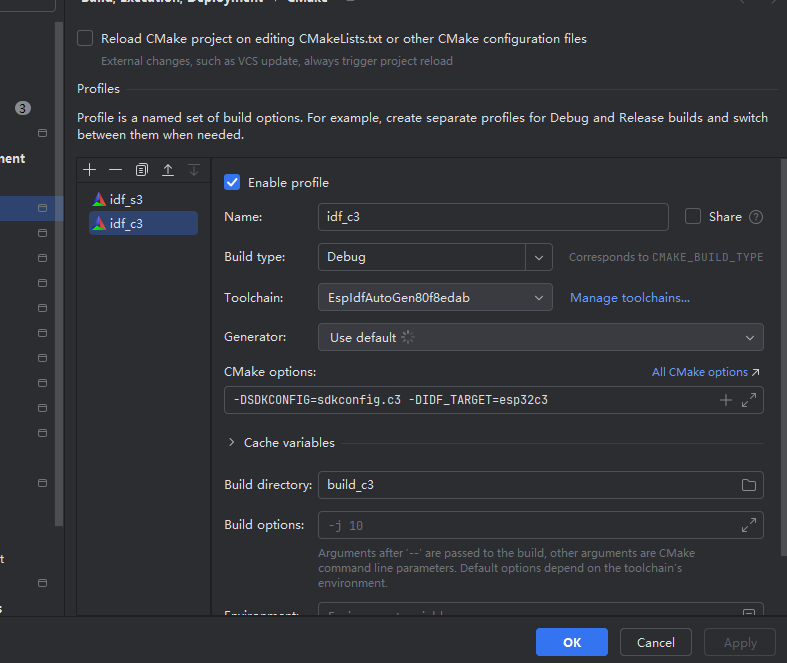
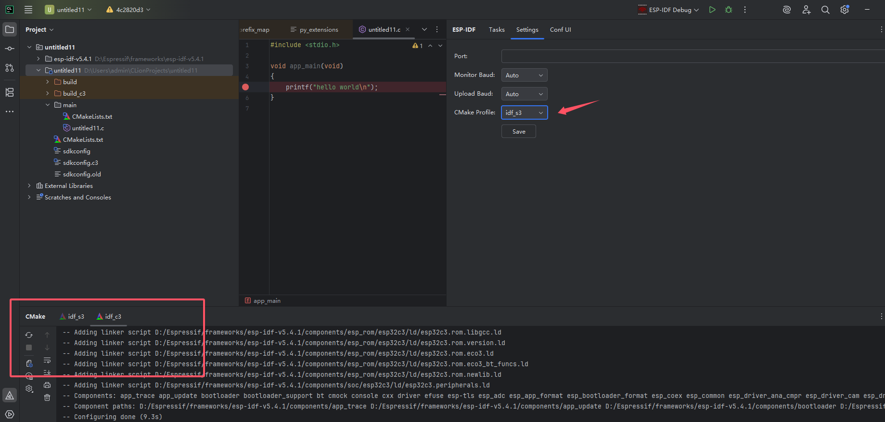
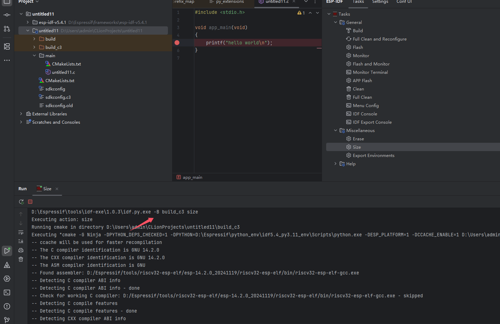
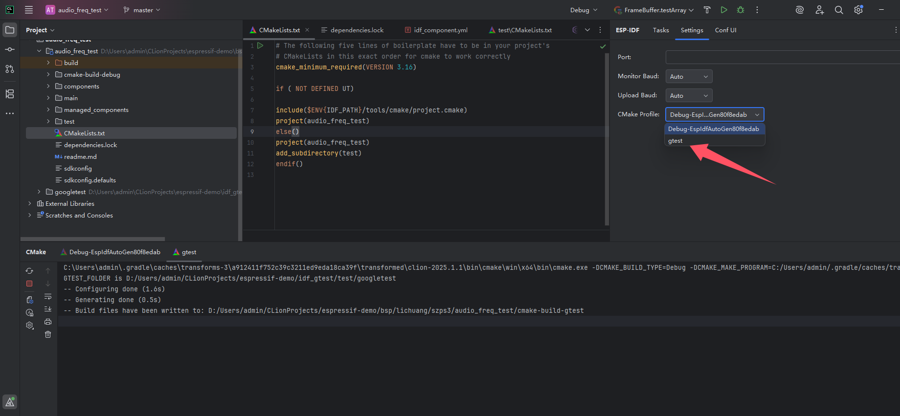

Profile
Clion本身支持多profile配置。 我们可以在一个项目中使用多个配置项构建 不同Toolchain不同cache变量配置的结果。 这里我们可以使用多个Profile配置构建出不同的固件，可以是不同的芯片类型。
这里需要多个输出目录，而sdkconfig大部分情况下也是需要分离的。
这里有个简单多芯片构建的场景

复制一份Profile 将添加cmake 指定sdkconfig和target
-DSDKCONFIG=sdkconfig.c3 -DIDF_TARGET=esp32c3
并指定cmake build输出目录
应用成功后会两个Profile在cmake工具窗各自产生一个cmake配置任务，并在在本插件的设置界面，CMake Profile下拉选项中出现。

切换cmake profile
兼顾多个Profile的任务树操作，可以在设置界面进行切换，任务操作的Profile,在实际执行idf.py时 build目录会被指定。

限制
单一环境变量缓存 当前插件的环境变量为单一缓存，也就是说如果使用多个不同的Toolchain配置了多个Profile 也只会有一份环境变量缓存。 不建议在使用多个版本的IDF构建同一个项目时，依赖本插件的任务树操作其他与第一个Profile不同的Toolchain的Profile对应的任务。
未区分非IDF ToolChian的Profile 例如添加了gtest情况下使用了编译机的Toolchain或者远程Toolchain wsl等并非IDF Toolchain 这里未做过滤，并且操作也无意义

02 八月 2025